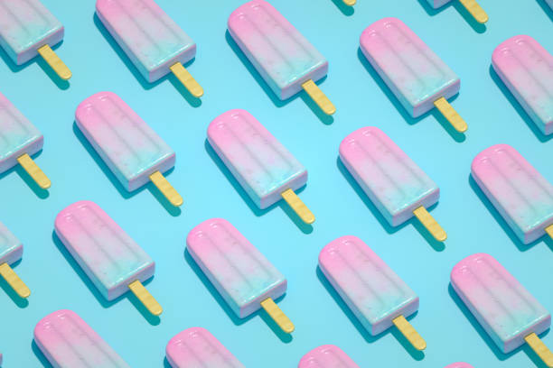

Images Positioning
Before the begining of a paragraph

An ice pop is a water or milk-based frozen snack on a stick. Unlike ice cream or sorbet, which are whipped while freezing to prevent ice crystal formation, an ice pop is "quiescently" frozen—frozen while at rest—and becomes a solid block of ice. The stick is used as a handle to hold it.
In the middle of a paragraph
An ice pop is a water or milk-based frozen snack on a stick. Unlike ice cream or sorbet, which are whipped while freezing to prevent ice crystal formation, an ice pop is "quiescently" frozen—frozen while at rest—and becomes a solid block of ice. The stick is used as a handle to hold it.
At the starting of a paragraph
An ice pop is a water or milk-based frozen snack on a stick. Unlike ice cream or sorbet, which are whipped while freezing to prevent ice crystal formation, an ice pop is "quiescently" frozen—frozen while at rest—and becomes a solid block of ice. The stick is used as a handle to hold it.
3 Rules to follow perfect image placement in the webpage
-
The resolution of image
The resolution of the image is restricted to 72 pixels per inch ,because computer displays show images as 72 pixels per inch.However,The image size depends upon the height and width of the image also.The Formats like .jpg,.png,.gif store images in the form of Bitmaps
.
-
Use the following formats depeneding upon the uses
- If image is having more colours use .jpeg
- Jpeg format
- Use JPEG format for all images that contain a natural scene or photograph where variation in colour and intensity is smooth.JPEG have LOSSY COMPRESSION format.JPEG images don’t support TRANSPARENCY and are hence not usable for such cases.
- If image is using less colours use .gif or .png
- png format
- PNG is a LOSSLESS image format.No data is lost during compression and no compression artefacts are introduced in the image. For this reason, a PNG image would retain higher quality than an image than JPEG and would look a lot sharper.a great choice for images with text, logos and shapes with sharp edges.PNG images support transparencyin two ways — inserting an alpha channel that allows partial transparency or by declaring a single colour as transparent (index transparency).
- gif format
- GIF is also a lossless image format.GIF images are now mainly used only if the image contains animations.GIF images support transparency by declaring a single colour in the colour palette as transparent (index transparency
-
Right size of the image
- Use correct width and height
- Strech the images from corners
- Use Portarait or Lanscape mode